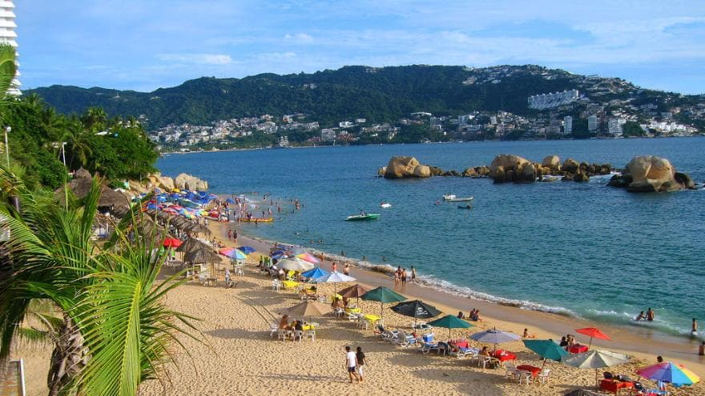

Playa la condesa
Esta playa se encuentra entre el Hotel El Presidente y el Hotel Emporio, en la Zona Dorada de la Costera Miguel Alemán. Hay varios restaurantes sobre esta playa, en algunos de los cuales puedes cenar una exquisita langosta. Juvenil y bulliciosa, en sus alrededores hay lugares para bailar y para practicar diversos deportes, como jetski, esquí acuático, windsurf, vela, snorkeling y salto en bungee.
Ver Más